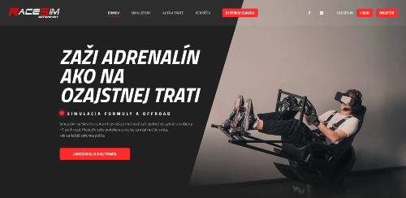

hi, I'm Vito.
a web dev.
pixelift
I'm a self-taught developer from Slovakia. For the past 4 years, I've been coding part-time as a
freelancer. Started with HTML/CSS and JavaScript later on even HTMX, then discovered SQL and
Lua. I prefer simple, straightforward tools over unnecessary complexity—most of the time, plain gets
the job
done.
simplicity is the way to heaven.
Projects

RaceSim
PHP, JQUERY, HTMX
Nolimithost
PHP, JQUERY, HTMX, FIGMA